CS184/284A Spring 2026 Homework 2: MeshEdit Write-Up
Link to webpage: https://github.com/cal-cs184-student/hw-webpages-YashCK/blob/main/hw2/index.html
Link to GitHub repository: https://github.com/cal-cs184-student/hw2-meshedit-meshman
Overview
In this homework we explored geometric modeling. The big picture goal was to understand how smooth curves and surfaces are represented and evaluated on a computer. This is a problem that comes up often from font rendering to 3D modeling. For Section I specifically, we implemented de Casteljau's algorithm, which is the recursive method for evaluating Bezier curves and surfaces.
Section I: Bezier Curves and Surfaces
Part 1: Bezier Curves with 1D de Casteljau Subdivision
What is de Casteljau's Algorithm?
A Bezier curve is a smooth parametric curve defined by a set of control points. The curve doesn't necessarily pass through every control point but instead, the control points act like a skeleton that influences the shape of the curve. The parameter \( t \in [0,1] \) tells us where along the curve we want to evaluate: at \( t = 0 \) we get the first control point, at \( t = 1 \) we get the last, and we get a smoothly interpolated point somewhere along the curve for the values in between.
De Casteljau's algorithm is used to actually compute that point for a given \( t \). We take every consecutive pair of control points and linearly interpolate between them at \( t \). If we started with \( n \) points, this gives us \( n - 1 \) intermediate points. Then we repeat the same process on those intermediate points by interpolating consecutive pairs agai. This gives us \( n - 2 \) points. We keep going like this, until we end up with a single point. That single point lies exactly on the Bezier curve at parameter \( t \).
Given points \( p_1, p_2, \dots, p_n \), we produce \( n - 1 \) new points: \[ p_i' = (1 - t)\, p_i + t\, p_{i+1}, \quad i = 1, \dots, n-1 \]
This is just a weighted average between each pair of neighbors. When \( t = 0 \), each new point equals the left neighbor; when \( t = 1 \), each new point equals the right neighbor; and for \( t \) in between we get something in the middle. This gradually converges toward the final curve point.
How We Implemented It
Our implementation has a function that performs one level of this subdivision. We loop over consecutive pairs, lerp them, and collect the results. The parameter \( t \) is stored as a member variable on the curve object, so we can just read it directly. We only do one step per call, so the caller has to call the function multiple times until one point remains.
Custom Bezier Curve
We created a Bezier curve with 6 control points in bzc/curve3.bzc.
We picked points that zigzag up and down to form an S-like shape.
Evaluation Steps
Below you can see each level of de Casteljau evaluation on our 6-point curve. Level 0 shows the original control points connected by white line segments. Each subsequent level shows the blue intermediate points produced by one round of interpolation, with the number of points decreasing by one at each step. At Level 5 we are left with a single red point which is the point on the Bezier curve at the current \( t \) value.

|

|

|

|

|

|

Modified Curve
Below we moved a few control points to new positions, giving us a differently shaped curve. We also scrolled to vary the \\( t \\) parameter and show a few screenshots of how the intermediate levels shift accordingly.

Here are screenshots at different values of \( t \), showing how the intermediate points and final evaluated point move along the curve as we scroll:

|

|

|

|

|
|

Part 2: Bezier Surfaces with Separable 1D de Casteljau
Extending to Surfaces
Bezier surfaces are the 2D generalization of Bezier curves. Instead of a 1D list of control points, we now have an \( n \times n \) grid of 3D control points. Additionally, instead of a single parameter \( t \) we have two parameters: \( u \) and \( v \), which both range between 0 to 1. The pair \( (u, v) \) picks out a specific point on the surface.
We can reuse the exact same 1D de Casteljau evaluation from Part 1, just applied in a two-pass method.
- Evaluate each row at \( u \): Each row of the control point grid defines its own Bezier curve in 3D. We run the full de Casteljau algorithm on each row using parameter \( u \). This collapses each row of \( n \) points down to a single 3D point. With \( n \) rows, we end up with \( n \) points.
- Evaluate the column at \( v \): Those \( n \) row-evaluated points sit roughly along a column of the surface. They themselves define a Bezier curve, but time parameterized by \( v \). We run de Casteljau one more time on these points using parameter \( v \), and the result is the final surface point \( P(u, v) \).
In total we're doing \( n + 1 \) independent 1D evaluations: \( n \) for the rows and 1 for the column.
How We Implemented It
We have three functions that build on each other:
- evaluateStep(points, t) : This is essentially the same as the 2D version from Part 1, except it works on 3D points and takes \( t \) as an explicit parameter. It performs a single level of lerping between consecutive points.
- evaluate1D(points, t) : This runs the full de Casteljau recursion to completion. It just calls evaluateStep in a loop until only one point is left, then returns that point.
- evaluate(u, v) : It iterates over each row of the control point grid, calls evaluate1D on each row with parameter \( u \) to get one point per row, collects those into a new list, and then calls evaluate1D on that list with parameter \( v \).
In pseudocode:
function evaluate(u, v):
column_points = empty list
for each row in controlPoints:
point = evaluate1D(row, u)
column_points.append(point)
return evaluate1D(column_points, v)
Result
To verify our implementation, we loaded the teapot defined as Bezier patches in bez/teapot.bez.
The mesh renderer samples the surface at a grid of \( (u, v) \) values, calls our evaluate
function for each sample, and stitches the resulting 3D points into triangles. The resulting teapot
is shown below.

bez/teapot.bez).Section II: Triangle Meshes and Half-Edge Data Structure
Part 3: Area-Weighted Vertex Normals
Area-Weighted Normals
We compute a smooth normal at each vertex, and then interpolate those normals across each face. We can get the geometric normal of each face from the cross product of two of its edges. We want a single normal at the vertex that represents a smooth average of those face normals. We use area-weighted averaging so that each face's normal is weighted by the triangle's area.
How We Implemented It
We iterate over all faces incident to the vertex using the half-edge traversal pattern. Starting from the vertex's halfedge, we follow twin → next to walk around to the next outgoing halfedge. For each non-boundary face, we grab the three vertex positions, compute the cross product, and accumulate it into a running sum. At the end we normalize the accumulated vector to unit length.
function vertex_normal():
n = (0, 0, 0)
h = this.halfedge
do:
if h.face is not boundary:
p0, p1, p2 = the three vertex positions of h.face
n += cross(p1 - p0, p2 - p0) // area-weighted normal
h = h.twin.next // advance to the next face
while h != this.halfedge
return normalize(n)
Results
Below are screenshots of the teapot mesh (dae/teapot.dae) rendered with
flat shading (default) and with Phong shading (pressing Q to enable smooth vertex normals).
The difference is dramatic: the flat-shaded version looks faceted and polygonal, while the
Phong-shaded version shows a smooth, natural-looking teapot surface.
|
|
|
Part 4: Edge Flip
Edge Flip
Two triangles that share an edge from a diamond shape with four vertices. Flipping the shared edge means we reconnect the diagonal of that quad.
In terms of the half-edge data structure, we have to update the next,
twin, vertex, edge, and face pointers of the
six halfedges involved (three per triangle), plus the halfedge references stored on the vertices,
edges, and faces. No new elements are allocated as it's just a rewiring operation.
How We Implemented It
The approach we followed was to draw out the before and after configurations on paper, label every
element (halfedges, vertices, edges, faces), and then just write out the new pointer assignments
one by one. We used the setNeighbors(next, twin, vertex, edge, face) helper to set
all five fields of each halfedge in a single call.
In the before picture, we have triangles \( (a, b, c) \) and \( (c, b, d) \), with the shared edge going between \( b \) and \( c \). In the after picture, we have triangles \( (a, d, c) \) and \( (a, b, d) \), with the flipped edge going between \( a \) and \( d \).
Before: After:
c c
/ \ /|\
/ \ / | \
/ f0 \ / | \
a-------b ——> a f0 | f1 b
\ f1 / \ | /
\ / \ | /
\ / \|/
d d
Edge was b—c, now is a—d.
An important note is that we return immediately without doing anything if the edge is a boundary edge, since flipping a boundary edge doesn't make geometric sense.
Debugging
The debugging process that helped us avoid bugs was to draw the "before" and "after" diagrams, explicitly label all six halfedges (h0 through h5), all four vertices (a, b, c, d), the two faces (f0, f1).By being thorough and not skipping any pointer, we were able to have a systematic way of going about the code.
Results
Below are screenshots of a mesh before and after performing several edge flips. Each flip was done by clicking an edge in the viewer and pressing F.
|
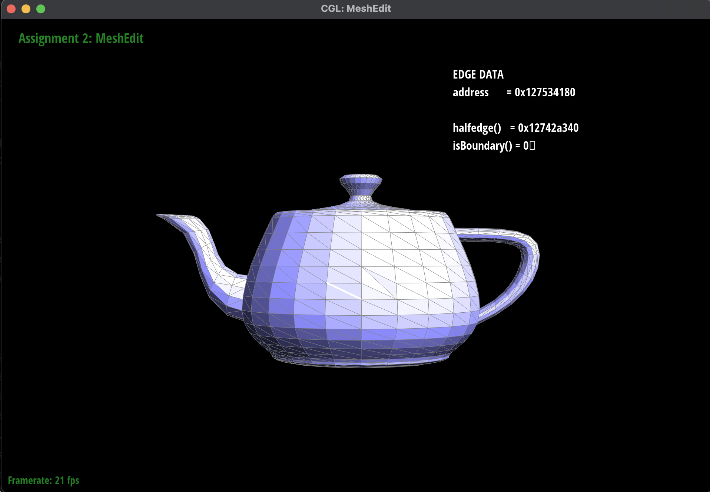 |
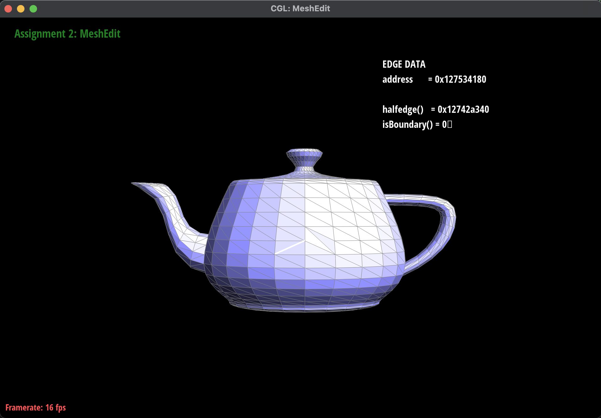 |
|
|
|
Part 5: Edge Split
Edge Split
Splitting an edge inserts a new vertex at the midpoint of that edge and reconnects the mesh so that the two triangles sharing the edge become four triangles. The new vertex is connected to the two opposing vertices which creates two new cross edges. Unlike a flip, a split actually creates new mesh elements: 1 new vertex, 3 new edges, 2 new faces, and 6 new halfedges.
How We Implemented It
We followed a similar strategy to the edge flip: draw the before and after pictures, label everything, and then write out all the pointer assignments.
Starting from two triangles \( (a, b, c) \) and \( (c, b, d) \) sharing edge \( b \text{--} c \), we create midpoint \( m \) and end up with four triangles:
Before: After:
c c
/ \ /|\
/ \ / | \
/ f0 \ f2 / | \ f3
a-------b ——> a----m----b
\ f1 / f0 \ | / f1
\ / \ | /
\ / \|/
d d
f0: (a, b, m) f1: (b, d, m)
f2: (a, m, c) f3: (m, d, c)
We allocate the new elements (newVertex, newEdge, newFace,
newHalfedge), set the new vertex position to the midpoint of the original edge's
endpoints, and then carefully assign all of the halfedge pointers using setNeighbors.
Finally, we update the halfedge pointers on every vertex, face, and edge.
For loop subdivision (Part 6), we also set the isNew flags:
the new vertex \( m \) is marked new, the two cross edges \( m \text{--} a \) and \( m \text{--} d \)
are marked isNew = true, and the two edges along the original direction
(\( b \text{--} m \) and \( m \text{--} c \)) are marked isNew = false.
Debugging
Our approach was to write out all the face traversals (e.g., "f0: b → m → a → b corresponds to h0, h7, h2")
anf then filled in setNeighbors from those traversals. We also double-checked every twin pairing
(h0/h3, h6/h7, h8/h9, hA/hB) and verified that each twin pair has opposite vertex assignments.
Results
Below are screenshots showing edge splits, as well as a combination of splits and flips. Splits are performed by clicking an edge and pressing S, and flips by pressing F.
|
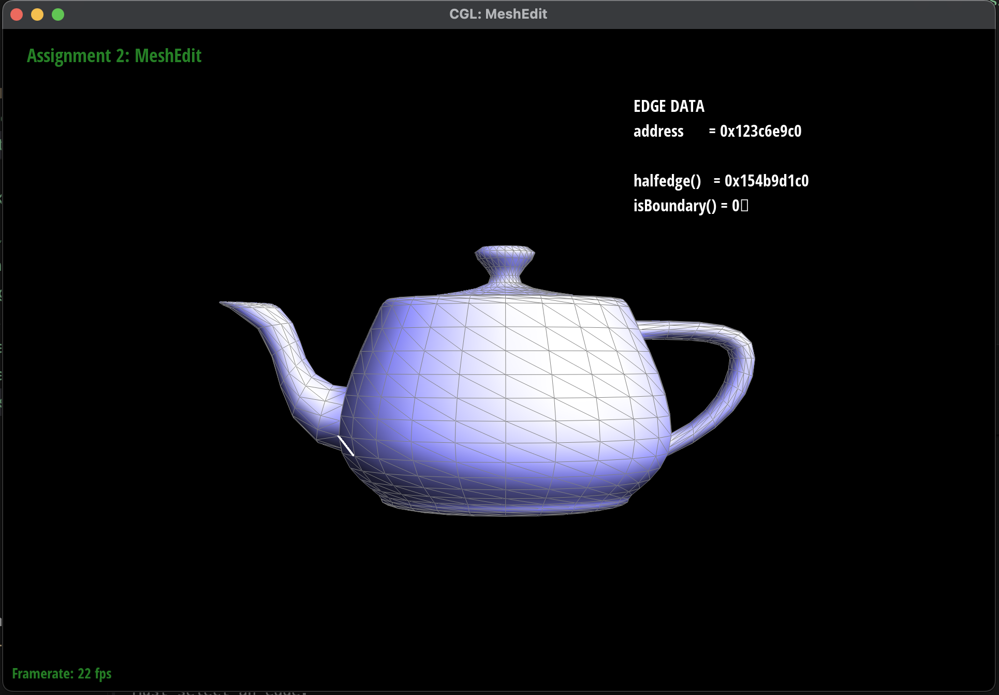 |
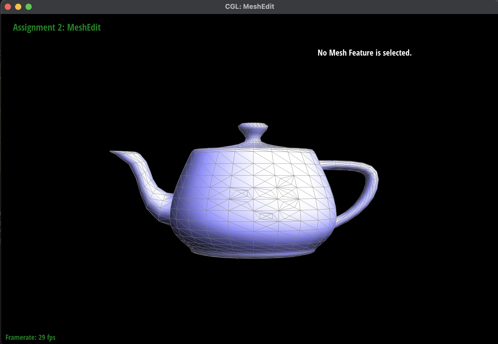 |
|
|
|
Part 6: Loop Subdivision for Mesh Upsampling
What Is Loop Subdivision?
Loop subdivision is taking a coarse triangle mesh and producing a finer, smoother mesh. The basic idea is: (1) split every edge to subdivide each triangle into four smaller triangles, and (2) move all the vertices to smoothed positions so that the mesh converges toward a smooth limit surface after repeated applications.
Vertex Position Update Rules
There are two kinds of vertices after subdivision: old vertices (the ones that already existed) and new vertices (the ones created at edge midpoints during splitting). Each gets its position from a different weighted average:
New vertex position (at the midpoint of edge \( A \text{--} B \), with opposing vertices \( C \) and \( D \)):
\[ m = \frac{3}{8}(A + B) + \frac{1}{8}(C + D) \]Old vertex position (for a vertex with degree \( n \) and neighbors \( p_1, \dots, p_n \)):
\[ v_{\text{new}} = (1 - n \cdot u) \cdot v_{\text{old}} + u \cdot \sum_{i=1}^{n} p_i \]where \( u = \frac{3}{16} \) if \( n = 3 \) and \( u = \frac{3}{8n} \) otherwise. A vertex moves partway toward the average of its neighbors.
Our Implementation
We followed a 5-step approach:
-
Compute new positions for old vertices. For each existing vertex we compute the weighted
average using the formula above and store it in
vertex.newPosition. We also mark all existing vertices withisNew = false. -
Compute new positions for edge midpoints. For each existing edge we compute the
\( \frac{3}{8}(A+B) + \frac{1}{8}(C+D) \) weighted position and store it in
edge.newPosition. We also mark all existing edges withisNew = false. -
Split every original edge. We iterate only over the original edges (using a counter
to avoid touching newly created ones). Splitting an edge creates a new vertex at the midpoint.
We immediately copy the precomputed
edge.newPositioninto the new vertex'snewPosition. -
Flip new edges connecting old and new vertices. After splitting, the mesh has some diagonal
edges that run from an old vertex to a new vertex. These need to be flipped to complete the 4-1
subdivision pattern properly. We iterate over all edges, and for any edge that is marked
isNewand connects one old vertex to one new vertex, we flip it. -
Copy new positions into final positions. Finally we do a single loop over all vertices
and set
position = newPosition.
function upsample(mesh):
// Step 1: compute smoothed positions for old vertices
for each vertex v in mesh:
v.isNew = false
n = v.degree
u = 3/16 if n == 3 else 3/(8n)
v.newPosition = (1 - n*u) * v.position + u * sum_of_neighbors
// Step 2: compute positions for new edge midpoints
for each edge e in mesh:
e.isNew = false
A, B = edge endpoints
C, D = opposing vertices of the two adjacent faces
e.newPosition = 3/8 * (A + B) + 1/8 * (C + D)
// Step 3: split original edges only
numOriginalEdges = mesh.nEdges
for each original edge e (up to numOriginalEdges):
m = mesh.splitEdge(e)
m.newPosition = e.newPosition
m.isNew = true
// Step 4: flip new edges connecting old vertex to new vertex
for each edge e in mesh:
if e.isNew and (one endpoint is new, other is old):
mesh.flipEdge(e)
// Step 5: update all vertex positions
for each vertex v in mesh:
v.position = v.newPosition
Observations: Sharp Corners and Edges
After repeatedly applying loop subdivision, sharp corners and edges get rounded off. This happens because the position update rules pull each vertex toward the average of its neighbors, which has a smoothing/blurring effect. Vertices sitting at sharp features get pulled away from their original positions and toward the surrounding geometry, causing the corners to become increasingly rounded with each iteration.
One way to reduce this effect is to pre-split edges near the sharp features. This increases the local vertex density, which means each vertex has neighbors that are more tightly clustered around the original sharp position. With more neighbors close together, the averaging doesn't move the corner vertex as far, so the sharpness is better preserved.
Cube Asymmetry Analysis
Loading dae/cube.dae and performing loop subdivision shows
the cube becomes slightly asymmetric after a few iterations. It should remain perfectly symmetric, but it doesn't.
The reason is because the original cube mesh has each face split into two triangles by a single diagonal edge, and the diagonals are not placed symmetrically. For example, one face might have its diagonal going from the top-left to bottom-right, and another face has it in a different orientation. This asymmetric triangulation breaks the symmetry of the vertex connectivity, so the Loop subdivision weights produce slightly different results on different parts of the cube.
To fix this, we can pre-process the cube by splitting each diagonal edge before subdivision, which adds a vertex at the center of each face and turns the two triangles into four symmetric ones. After this, every face of the cube has a uniform triangulation pattern and the vertex valences become symmetric. Now repeated Loop subdivision produces a perfectly symmetric rounded shape.
Results
Below are screenshots showing the cube and teapot (or other mesh) at various levels of loop subdivision. Press L to perform one level of subdivision.
|
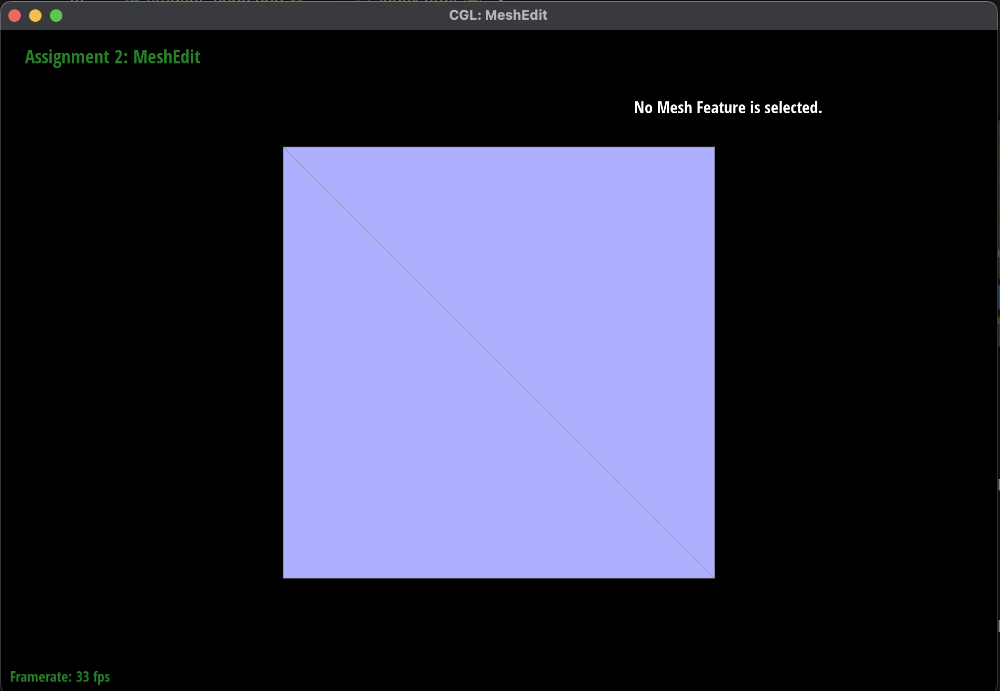 |
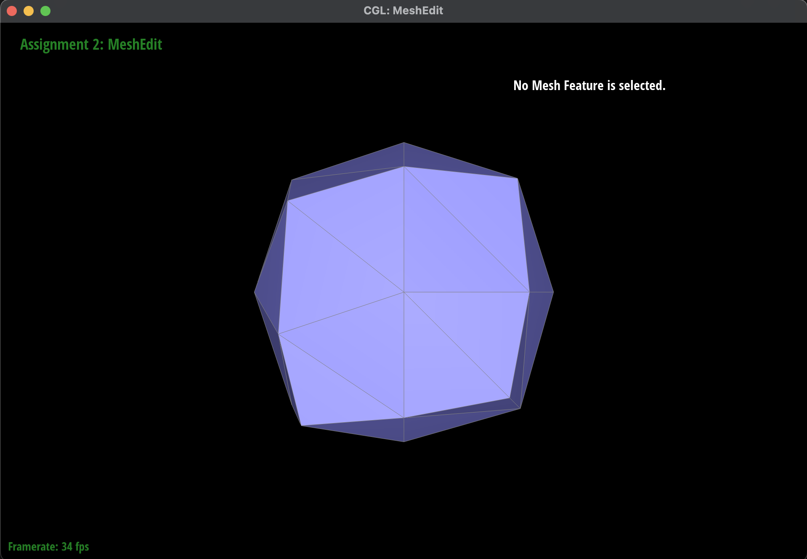 |
|
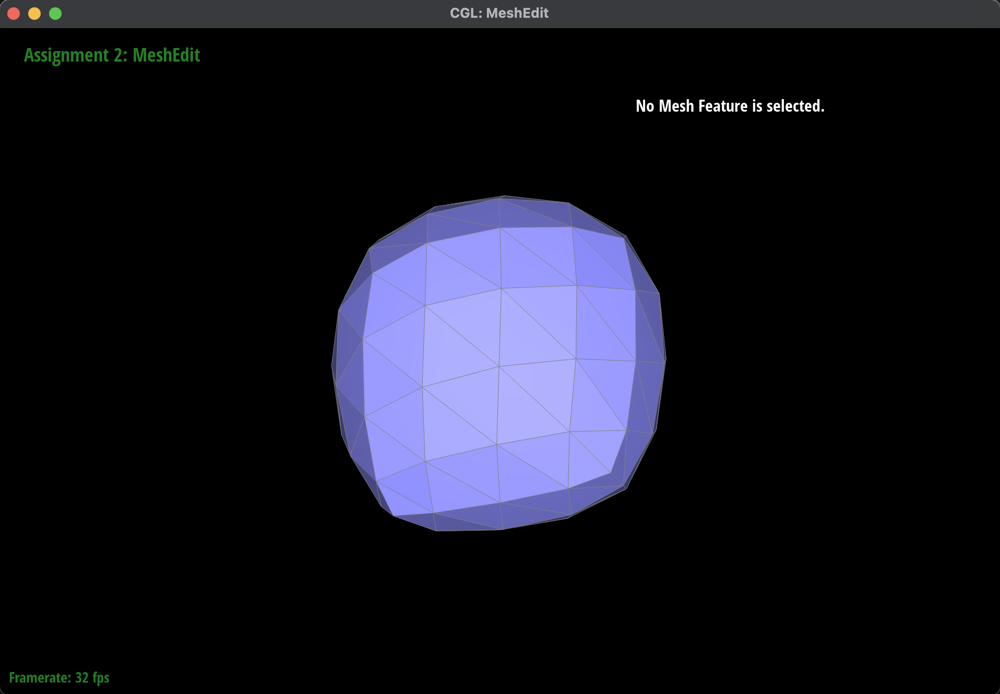 |
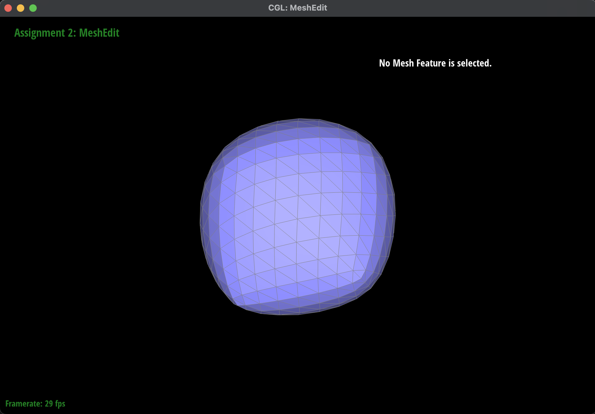 |
|
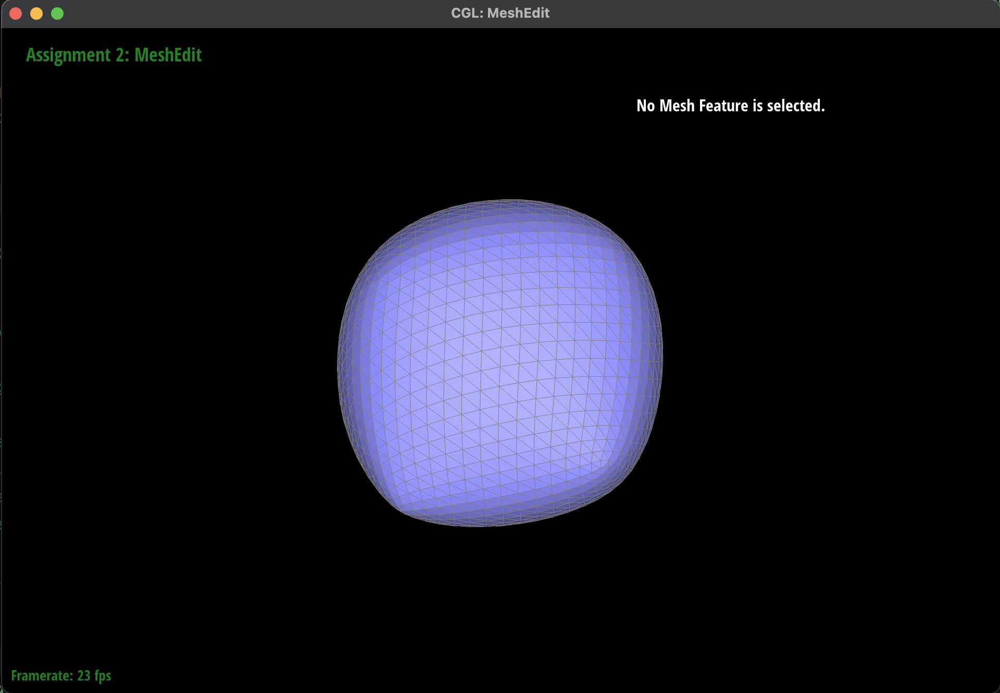 |
|
|
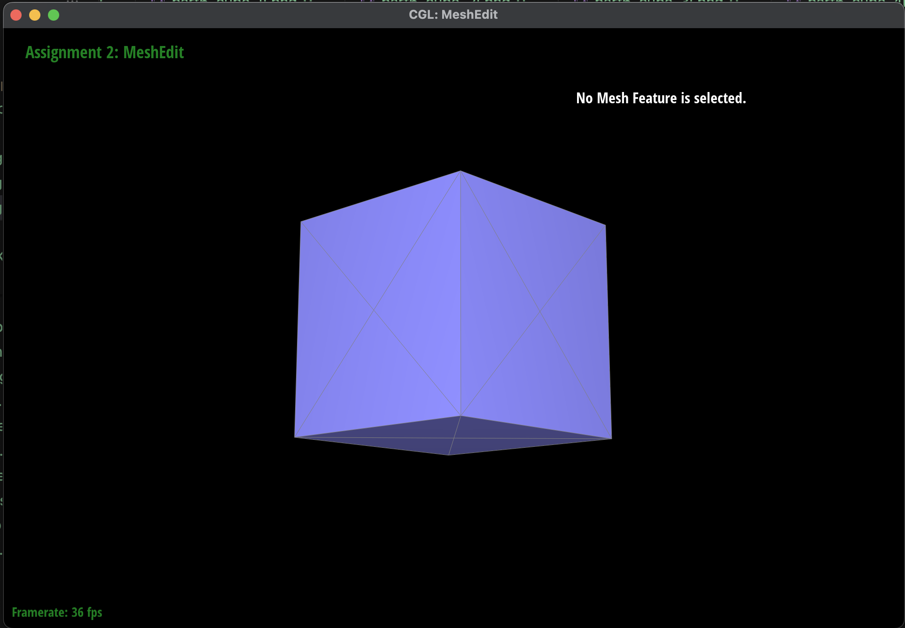 |
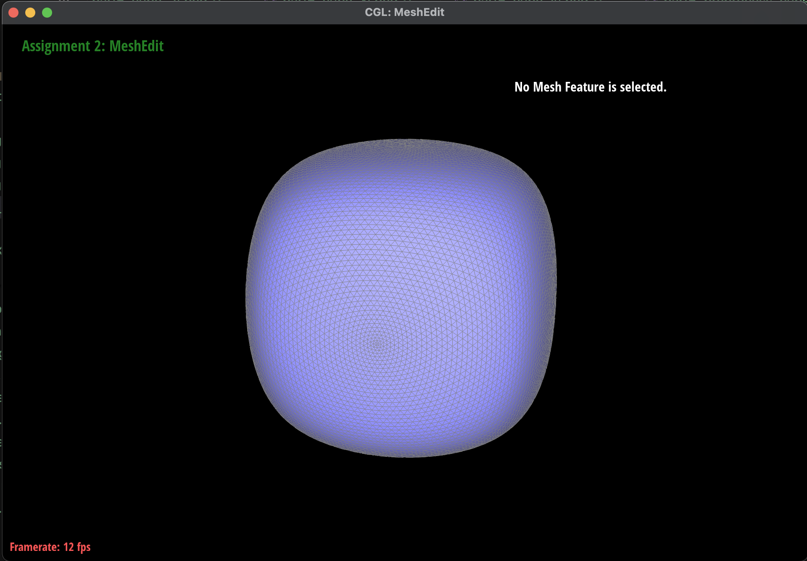 |
|
|
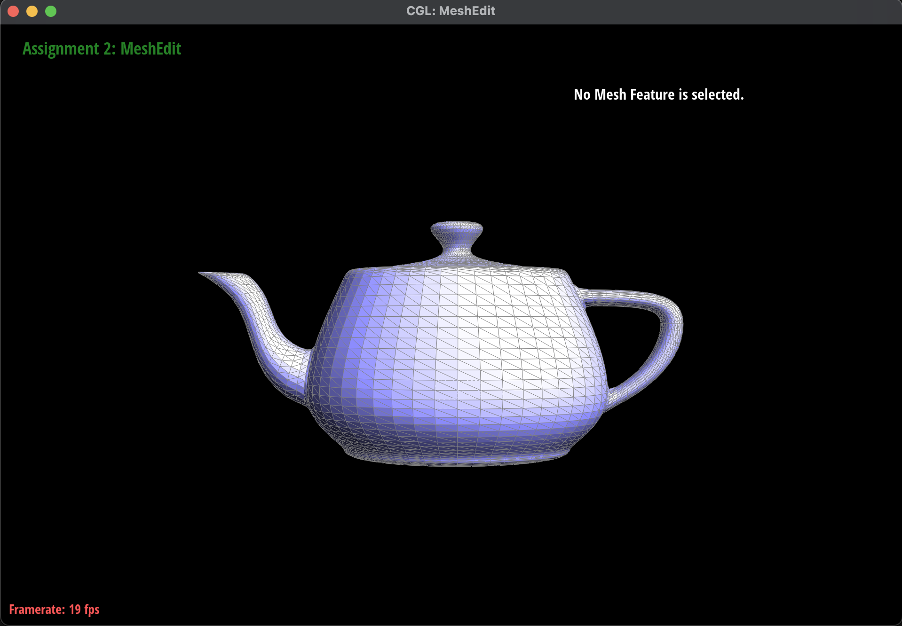 |